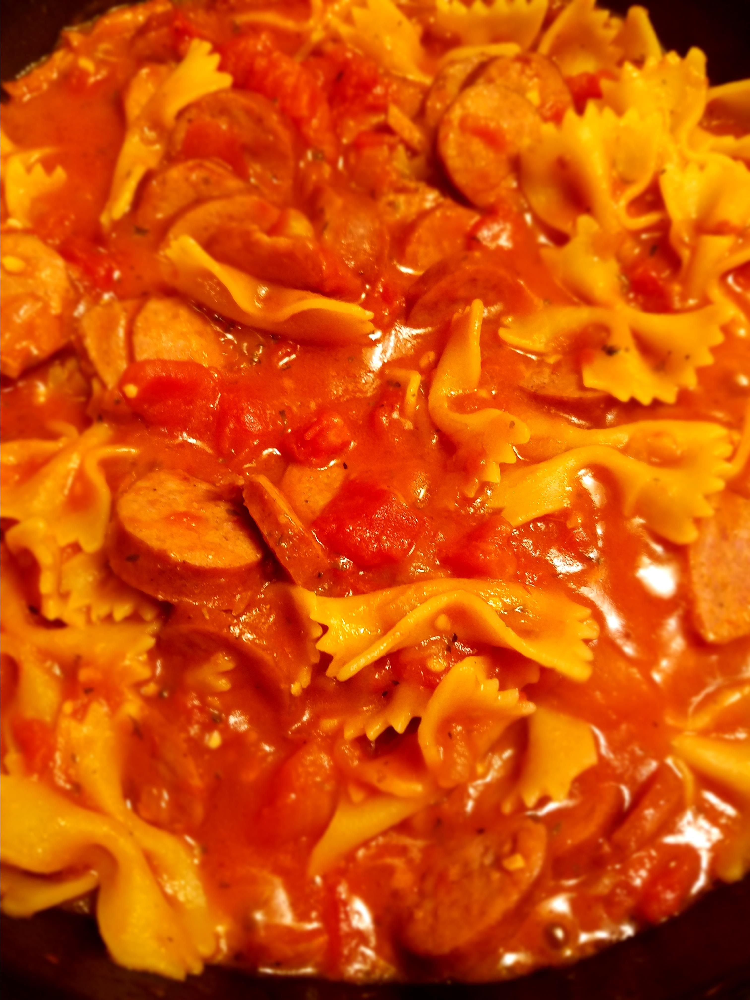

Kielbasa and Bow Ties

Easy to make and only a few ingredients!
- 3 tbsp olive oil
- 1 onion, chopped
- 2 cloves garlic, minced
- 1 lb keilbasa
- 2 (14.5 oz) cans peels and diced tomatoes
- 1 (8 oz) can tomato sauce
- salt and pepper to tast
- 1 (8 oz) package tri-colored farfalle (bow tie) pasta
- 1/4 cup grated Parmesan cheese, or to taste
- Heat the oil in a large saucepan over medium high heat. Stir in the onion and garlic and saute for 5 minutes, or until tender. Then stir in the kielbasa and saute for 5 more minutes.
- Pour in the tomatoes, tomato sauce, salt and pepper to taste and the pasta. Mix all together well, making sure the mixture is wet enough to cook the pasta. If necessary, mix in some water.
- Cover, reduce heat to low and simmer for 20 minutes, or until the pasta is tender.